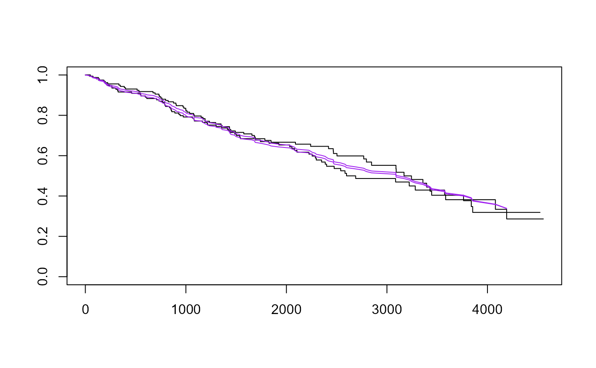

Compute Expected Survival
survexp.RdReturns either the expected survival of a cohort of subjects, or the individual expected survival for each subject.
Usage
survexp(formula, data, weights, subset, na.action, rmap, times,
method=c("ederer", "hakulinen", "conditional", "individual.h",
"individual.s"),
cohort=TRUE, conditional=FALSE,
ratetable=survival::survexp.us, scale=1,
se.fit, model=FALSE, x=FALSE, y=FALSE)Arguments
- formula
formula object. The response variable is a vector of follow-up times and is optional. The predictors consist of optional grouping variables separated by the
+operator (as insurvfit), and is often~1, i.e., expected survival for the entire group.- data
data frame in which to interpret the variables named in the
formula,subsetandweightsarguments.- weights
case weights. This is most useful when conditional survival for a known population is desired, e.g., the data set would contain all unique age/sex combinations and the weights would be the proportion of each.
- subset
expression indicating a subset of the rows of
datato be used in the fit.- na.action
function to filter missing data. This is applied to the model frame after
subsethas been applied. Default isoptions()$na.action.- rmap
an optional list that maps data set names to the ratetable names. See the details section below.
- times
vector of follow-up times at which the resulting survival curve is evaluated. If absent, the result will be reported for each unique value of the vector of times supplied in the response value of the
formula.- method
computational method for the creating the survival curves. The
individualoption does not create a curve, rather it retrieves the predicted survivalindividual.sor cumulative hazardindividual.hfor each subject. The default is to usemethod='ederer'if the formula has no response, andmethod='hakulinen'otherwise.- cohort
logical value. This argument has been superseded by the
methodargument. To maintain backwards compatability, if is present and FALSE, it impliesmethod='individual.s'.- conditional
logical value. This argument has been superseded by the
methodargument. To maintain backwards compatability, if it is present and TRUE it impliesmethod='conditional'.- ratetable
a table of event rates, such as
survexp.mn, or a fitted Cox model. Note thesurvival::prefix in the default argument is present to avoid the (rare) case of a user who expects the default table but just happens to have an object named "survexp.us" in their own directory.- scale
numeric value to scale the results. If
ratetableis in units/day,scale = 365.25causes the output to be reported in years.- se.fit
compute the standard error of the predicted survival. This argument is currently ignored. Standard errors are not a defined concept for population rate tables (they are treated as coming from a complete census), and for Cox models the calculation is hard. Despite good intentions standard errors for this latter case have not been coded and validated.
- model,x,y
flags to control what is returned. If any of these is true, then the model frame, the model matrix, and/or the vector of response times will be returned as components of the final result, with the same names as the flag arguments.
Value
if cohort=TRUE an object of class survexp,
otherwise a vector of per-subject expected survival values.
The former contains the number of subjects at risk
and the expected survival for the cohort at each requested time.
The cohort survival is the hypothetical survival for a cohort of
subjects enrolled from the population at large, but matching the data
set on the factors found in the rate table.
Details
Individual expected survival is usually used in models or testing, to
`correct' for the age and sex composition of a group of subjects.
For instance, assume that birth date, entry date into the study,
sex and actual survival time are all known for a group of subjects.
The survexp.us population tables contain expected death rates
based on calendar year, sex and age.
Then
haz <- survexp(fu.time ~ 1, data=mydata,
rmap = list(year=entry.dt, age=(birth.dt-entry.dt)),
method='individual.h'))
gives for each subject the total hazard experienced up to their observed death time or last follow-up time (variable fu.time) This probability can be used as a rescaled time value in models:
glm(status ~ 1 + offset(log(haz)), family=poisson)
glm(status ~ x + offset(log(haz)), family=poisson) In the first model, a test for intercept=0 is the one sample log-rank
test of whether the observed group of subjects has equivalent survival to
the baseline population. The second model tests for an effect of variable
x after adjustment for age and sex.
The ratetable being used may have different variable names than the user's
data set, this is dealt with by the rmap argument.
The rate table for the above calculation was survexp.us, a call to
summary{survexp.us} reveals that it expects to have variables
age = age in days, sex, and year = the date of study
entry, we create them in the rmap line. The sex variable was not
mapped, therefore the function assumes that it exists in mydata in the
correct format. (Note: for factors such as sex, the program will match on
any unique abbreviation, ignoring case.)
Cohort survival is used to produce an overall survival curve. This is then added to the Kaplan-Meier plot of the study group for visual comparison between these subjects and the population at large. There are three common methods of computing cohort survival. In the "exact method" of Ederer the cohort is not censored, for this case no response variable is required in the formula. Hakulinen recommends censoring the cohort at the anticipated censoring time of each patient, and Verheul recommends censoring the cohort at the actual observation time of each patient. The last of these is the conditional method. These are obtained by using the respective time values as the follow-up time or response in the formula.
References
Berry, G. (1983). The analysis of mortality by the subject-years method. Biometrics, 39:173-84.
Ederer, F., Axtell, L. and Cutler, S. (1961). The relative survival rate: a statistical methodology. Natl Cancer Inst Monogr, 6:101-21.
Hakulinen, T. (1982). Cancer survival corrected for heterogeneity in patient withdrawal. Biometrics, 38:933-942.
Therneau, T. and Grambsch, P. (2000). Modeling survival data: Extending the Cox model. Springer. Chapter 10.
Verheul, H., Dekker, E., Bossuyt, P., Moulijn, A. and Dunning, A. (1993). Background mortality in clinical survival studies. Lancet, 341: 872-875.
Examples
#
# Stanford heart transplant data
# We don't have sex in the data set, but know it to be nearly all males.
# Estimate of conditional survival
fit1 <- survexp(futime ~ 1, rmap=list(sex="male", year=accept.dt,
age=(accept.dt-birth.dt)), method='conditional', data=jasa)
summary(fit1, times=1:10*182.5, scale=365) #expected survival by 1/2 years
#> Call: survexp(formula = futime ~ 1, data = jasa, rmap = list(sex = "male",
#> year = accept.dt, age = (accept.dt - birth.dt)), method = "conditional")
#>
#> time n.risk survival
#> 0.5 41 0.996
#> 1.0 28 0.993
#> 1.5 21 0.989
#> 2.0 16 0.986
#> 2.5 13 0.983
#> 3.0 8 0.980
#> 3.5 7 0.977
#> 4.0 3 0.972
#> 4.5 1 0.969
# Estimate of expected survival stratified by prior surgery
survexp(~ surgery, rmap= list(sex="male", year=accept.dt,
age=(accept.dt-birth.dt)), method='ederer', data=jasa,
times=1:10 * 182.5)
#> Call:
#> survexp(formula = ~surgery, data = jasa, rmap = list(sex = "male",
#> year = accept.dt, age = (accept.dt - birth.dt)), times = 1:10 *
#> 182.5, method = "ederer")
#>
#> age ranges from 8.8 to 64.4 years
#> male: 103 female: 0
#> date of entry from 1967-09-13 to 1974-03-22
#>
#> time nrisk1 nrisk2 surgery=0 surgery=1
#> 182 87 16 0.996 0.996
#> 365 87 16 0.991 0.993
#> 548 87 16 0.987 0.989
#> 730 87 16 0.982 0.985
#> 912 87 16 0.978 0.981
#> 1095 87 16 0.973 0.977
#> 1278 87 16 0.968 0.973
#> 1460 87 16 0.963 0.969
#> 1642 87 16 0.958 0.964
#> 1825 87 16 0.952 0.960
## Compare the survival curves for the Mayo PBC data to Cox model fit
##
pfit <-coxph(Surv(time,status>0) ~ trt + log(bili) + log(protime) + age +
platelet, data=pbc)
plot(survfit(Surv(time, status>0) ~ trt, data=pbc), mark.time=FALSE)
lines(survexp( ~ trt, ratetable=pfit, data=pbc), col='purple')
